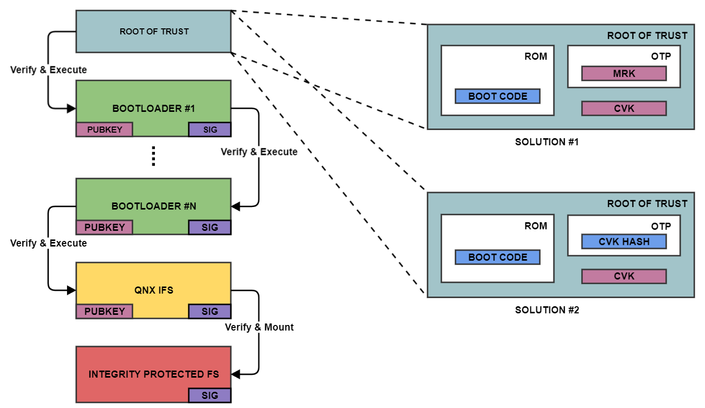

Secure boot is a mechanism that ensures the integrity of the running system, by cryptographically verifying each stage of the boot process.
This secure boot process involves having an immutable root of trust embedded in the hardware, either in an EEPROM or One-Time Programmable (OTP) chip. The number of steps in the bootchain varies based on the device SoC and system design but starts at a minimum of two. There are two approaches in how the root of trust is handled with their advantages and disadvantages.
The following diagram illustrates the secure boot process from initial power on to the optional mounting of an integrity protected filesystem containing protected binaries and data that execute on the system. Each solution for the root of trust is described in further details below. The cryptographic keys used in this process are all public keys that come from generated PKI key pairs. The specific details of the cryptographic keys are not essential in understanding how secure boot operates. Bootloaders execute many tasks at each stage of device power up and these specific details are omitted in this description
The only thing we mention is what the role of each bootloader is in progressing along the secure boot chain to reach system readiness.
The use of Public Key Infrastructure (PKI) cryptography has several advantages such as:

In this solution, the SoC vendor has in his or her possession the Master Root Key (MRK) which he or she uses to sign, using the private part of the MRK pair, the device owner's Code Verification Key (CVK) (usually an X509 certificate that contains the CVK). The root of trust is entirely in the SoC OEM's hands since they control the MRK and BOOT CODE and the public parts of these elements are written to immutable device memory. The CVK is cryptographically verified, on power on boot, by the SoC BOOT CODE using the public part of the MRK. Once the CVK is verified it is then used to verify the following stage of the boot chain as described above. The CVK doesn't need to be stored in any protected memory (OTP or EEPROM) since it is tied to the MRK. The device producer cryptographically signs the Bootloader #1 code using the private key part of the CVK stored offline.
Advantages:
Disadvantages:
This second approach doesn't require any prior keys and allows the device producer to inject his chosen key into the device. The SoC BOOT CODE is also contained in immutable device memory. At manufacturing time, the cryptographically secure hash of the CVK is written to protected memory (OTP). This hash allows the BOOT CODE to verify the integrity of the CVK before using it to cryptographically verify the signature of bootloader #1. The root of trust is the combination of the BOOT CODE and the hash of the CVK. The CVK can be stored in non- protected memory since it needs to match the cryptographic CVK hash (OTP is expensive, and a hash is always of the same short length compared to keys which vary in size based on strength and algorithm). The device producer cryptographically signs the Bootloader #1 code using the private key part of the CVK stored offline.
Note that the selection of the cryptographic hash may be constrained by the SoC vendor.
Advantages:
Disadvantages:
While secure boot is the basis of security, there are situations that it doesn’t protect out of the box and require attention. Often these are possible only if the SoC secure boot function supports them.